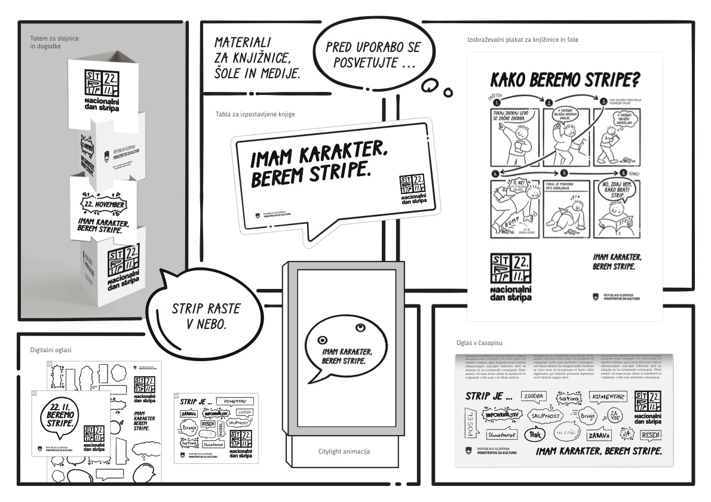

Campaign, identity, print, outdoor, events
National Comics Day
Slovenia's first National Comics Day, built on an empty panel and the invitation to fill it.

Context
Comics sit between literature and visual art and are taken entirely seriously as neither. The centenary of the cartoonist Miki Muster gave the Ministry a date; declining reading across every age group gave it a reason. What it did not have was a form.
Approach
We refused a conventional brand. The governing line was that a comic lives in its reader, not in a logo.
The mark is a four-panel comic grid: the letters of the word break across two panels, and the date, 22.11, occupies the other two. The date sits inside the structure rather than being applied to it.
Every element is drawn in the language of the thing itself. Speech bubbles carry the messages. The panel border becomes the frame for a poster, a totem, a citylight, a shelf sign.
The empty panel became the object of the campaign. Printed at A4 and handed out at workshops, it turned the argument into something a person could hold and fill in themselves.
For libraries and schools we made an educational poster — How do we read comics? — a comic that teaches you how to read a comic, in six panels. It went out with a display board for featured titles and a totem for events.
Press and digital advertising ran on one open sentence, A comic is …, completed by a scatter of hand-lettered bubbles: story, satire, commentary, community, art, reading, serious, for everyone.
The slogan, I have character, I read comics, turns on a word that means both a personality and a drawn character.
Material
Outcome
- 60+ media placements, national and regional
- 700+ attendees across the live events
- 1,988,418 outdoor impressions across 40 screens
- Four-page feature in Delo, the national daily
- Adopted by schools and libraries without prompting
- Delivered within a fixed budget